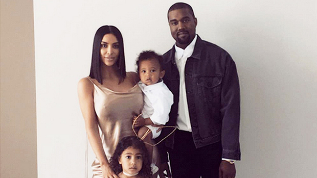
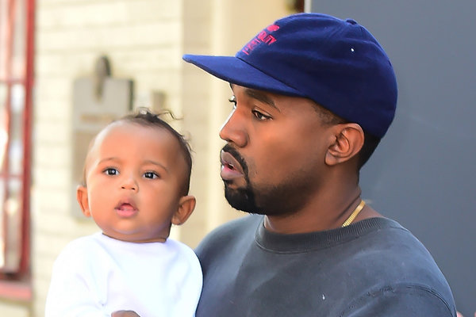

The legend of Kanye began on June 8, 1977, when he was born to Donda and Ray West in Atlanta, Georgia. His birth name is Kanye Omari West. They chose this Swahili name because it translates to "only one". Although he has a home in Hidden Hills, California, his permanent residence is in Chicago, Illinois.


The Life of Kanye
Kanye married Kim Kardashian in 2014. They have three children together: North West (2013), Saint West (2015), and Chicago West (2018).